Colorant Echo
紹介・遊び方ページ
BETゲームやプレイヤー共通イベントが揃った
オンラインメダルゲーム
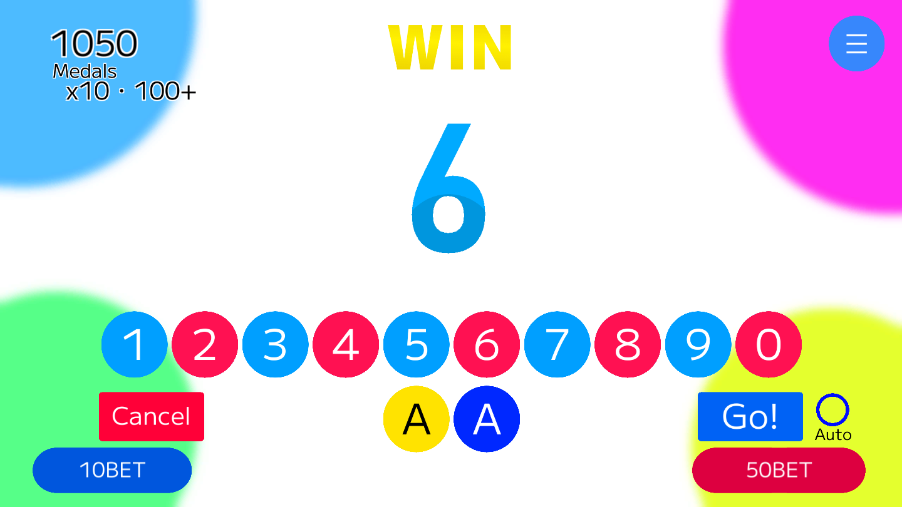
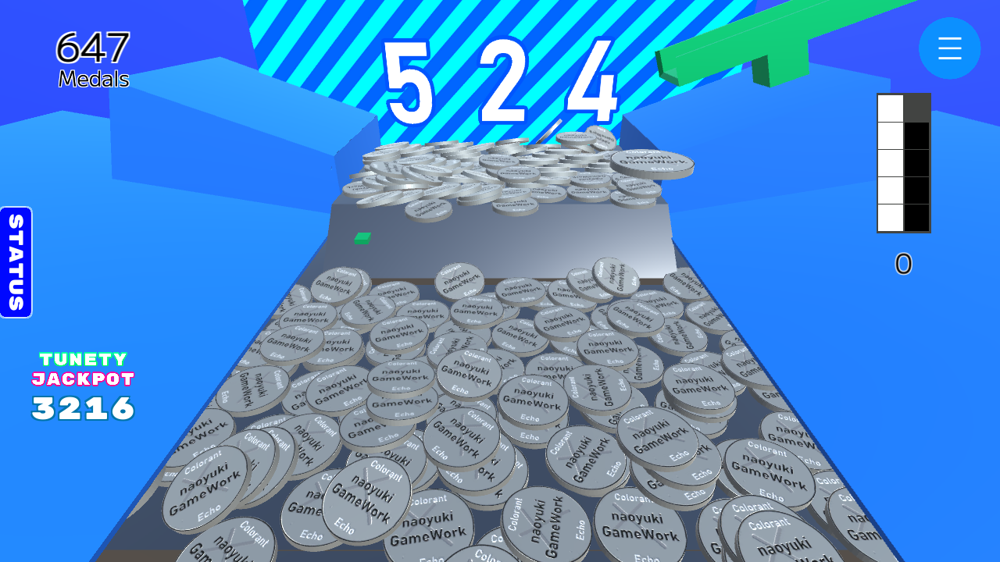
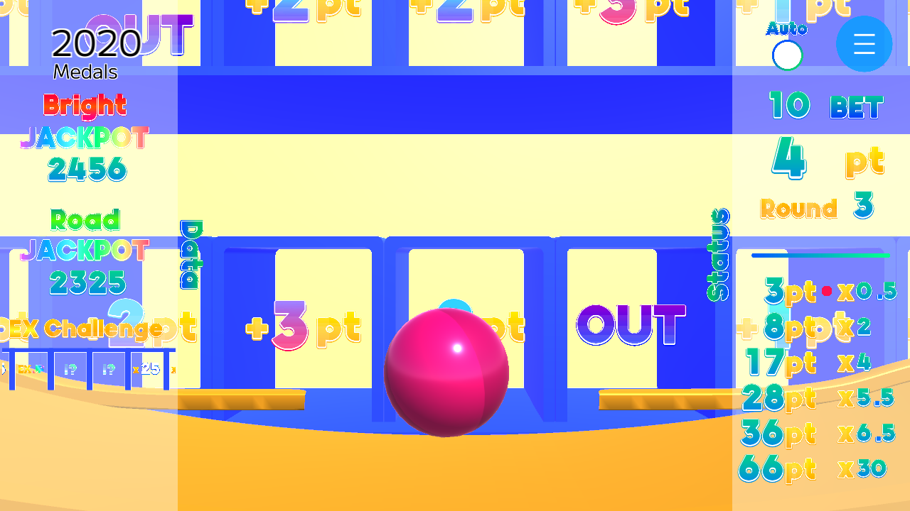
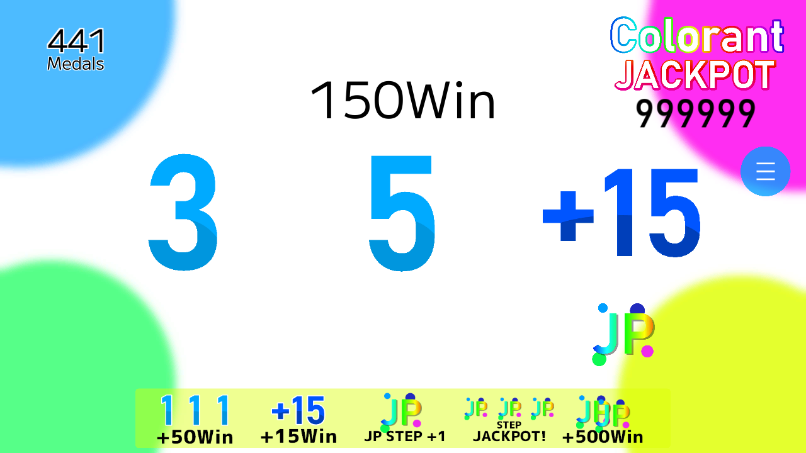
様々なゲームをプレイして億万長者になってみよう！
チャットはできないけど、
つながれる。
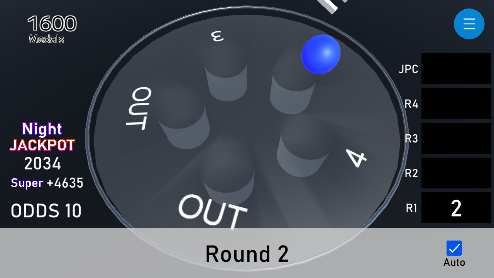
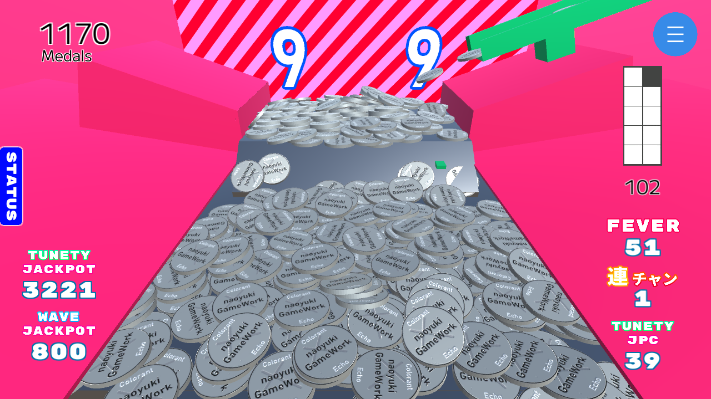
Colorant
Echoでは、チャットはできませんが、
オンラインでみんなと楽しく遊べるゲームです。
友達と同じJP競争をしたり、
1人でまったりプレイできます。
多彩なゲームで
何度でもプレイ
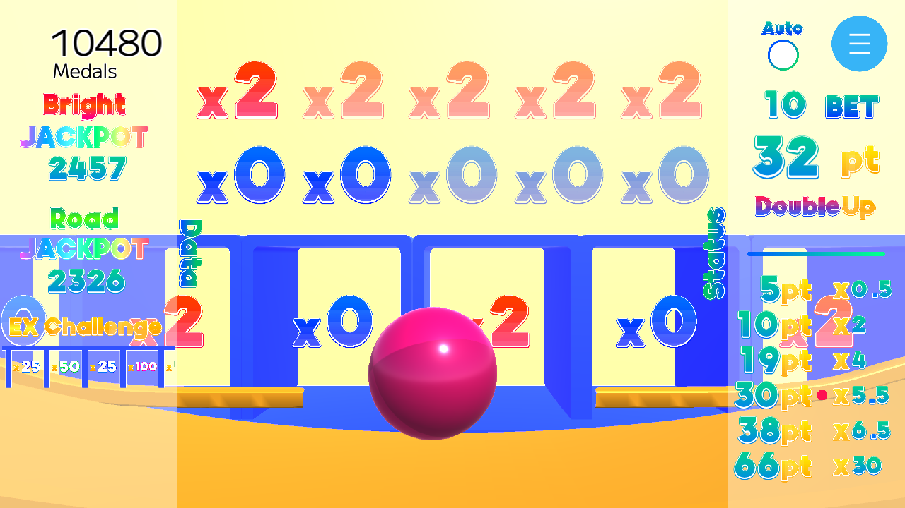
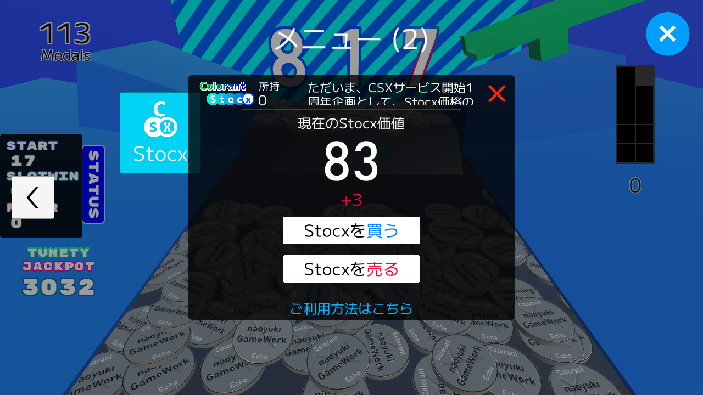
Colorant
Echoには、様々なジャンルの様々なゲームがあります。（現在5個+1）
自分にあったゲームをプレイして、コツを掴んでみるといいかもしれません。
全プレイヤー同時抽選イベントも搭載
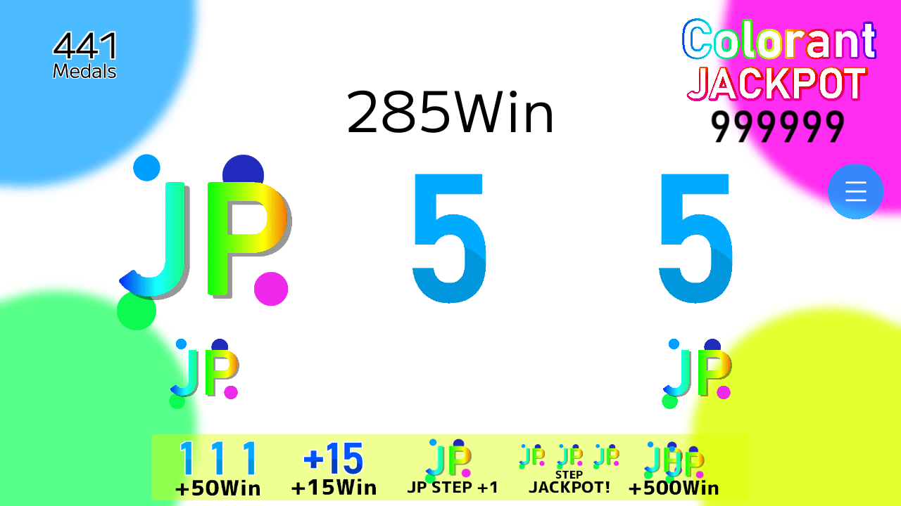
一日2回、特定の時間に全プレイヤー同時抽選が始まります。
みんなでためたJPを獲得できるチャンス！
※イベントなどで一日2回以上開催される場合があります。
遊び方
基本操作
このゲームはオンラインのメダルゲームとなっております。オンラインですが、基本的な操作や進め方はゲームセンターにあるようなメダルゲームとほぼ同じで、
・メダルを使う、
・メダルを貰う
という操作を行います。
ゲーセンにあるようなメダルゲームのデジタル版みたいなところですかね。
メダルゲーム全般に言えることですが、増やしたり減らしたりすることがメダルゲームの醍醐味ですよ。
・メダルを使う、
・メダルを貰う
という操作を行います。
ゲーセンにあるようなメダルゲームのデジタル版みたいなところですかね。
メダルゲーム全般に言えることですが、増やしたり減らしたりすることがメダルゲームの醍醐味ですよ。
公式ページからゲームをダウンロードしたら、解凍してゲームを起動しましょう。
そうすると、初めて遊ぶ場合、以下のような画面が出てくると思います。
この画面は、Colorant
Echo（通称:CE）へのユーザー登録がまだお済みでないときに表示されます。
画面の指示に従い、ニックネームを入力して「登録」を押してください。
そうすると、初めて遊ぶ場合、以下のような画面が出てくると思います。
画面の指示に従い、ニックネームを入力して「登録」を押してください。
ユーザー登録を完了した、またはすでに済んでいてゲームを起動した場合、以下の画面が表示されます。
これは、タイトル画面といい、ゲームをプレイする際の一番最初のステップです。
ここでプレイするゲームを選びます。
① ･･･ メニューボタン 様々な操作をする際に使います。（詳しくはA05-メニューをご覧ください。）
② ･･･ ゲーム選択ボタン この中のゲームをプレイする際に使います。
③ ･･･ ColorantJPインフォ 現在のColorantJPの枚数（詳しくはC01-Colorant JACKPOTCHANCEをご覧ください。）
④ ･･･ バージョン情報 アプリのバージョン
⑤ ･･･ コピーライト表記 当方が制作して著作権が帰属するという印、押すとクレジットが表示されます。
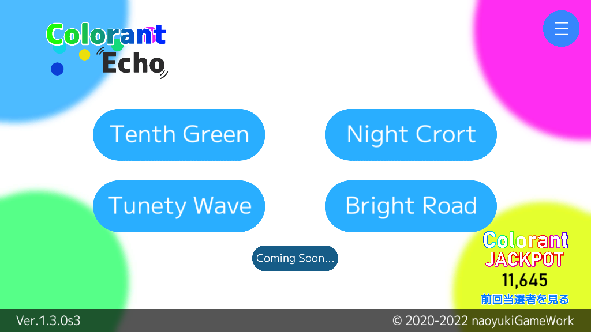
ここでプレイするゲームを選びます。
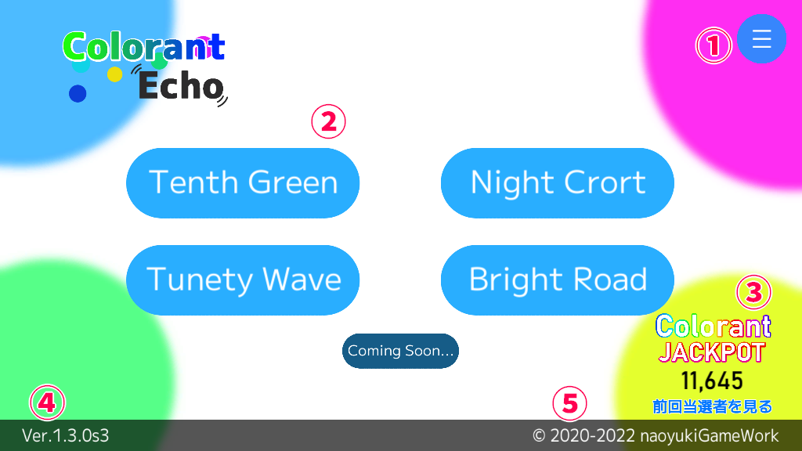
② ･･･ ゲーム選択ボタン この中のゲームをプレイする際に使います。
③ ･･･ ColorantJPインフォ 現在のColorantJPの枚数（詳しくはC01-Colorant JACKPOTCHANCEをご覧ください。）
④ ･･･ バージョン情報 アプリのバージョン
⑤ ･･･ コピーライト表記 当方が制作して著作権が帰属するという印、押すとクレジットが表示されます。
各ゲームで遊ぶには、「バンク」からメダルを引き出す必要があります。
ゲーム画面左上に、現在のメダル枚数が表示されています。これをクリックすると「メダルオプション」が表示されます。
バンクを開くには「バンクを開く」をクリックすると、メダルを引き出したり預けたりすることができます。
初回起動時のメダル枚数は1000枚です。
アプリを終了すると引き出したメダルは自動的にバンクに預けられ、保存されます。
先ほどのメダルオプションから「広告を見る」をクリックして広告を見ると100枚もらえます。
また、広告主のサイトに移動するとさらに250枚もらえます。
救済措置としてぜひご活用ください。
※ここでの広告はCEで独自に用意されたもので、広告収益は発生しません。仮想の広告として捉えていただけたら幸いです。
ゲーム画面左上に、現在のメダル枚数が表示されています。これをクリックすると「メダルオプション」が表示されます。
バンクを開くには「バンクを開く」をクリックすると、メダルを引き出したり預けたりすることができます。
アプリを終了すると引き出したメダルは自動的にバンクに預けられ、保存されます。
メダルがなくなってしまったとき
メダルがなくなってしまった場合でも、広告をみることでメダルを復活できます。先ほどのメダルオプションから「広告を見る」をクリックして広告を見ると100枚もらえます。
また、広告主のサイトに移動するとさらに250枚もらえます。
救済措置としてぜひご活用ください。
※ここでの広告はCEで独自に用意されたもので、広告収益は発生しません。仮想の広告として捉えていただけたら幸いです。
F12ゲーム画面のスクリーンショットが撮れます。
Enterバンクなど、決定するときに使います。
各ゲームの遊び方
Tenth Green ｜テンス グリーン
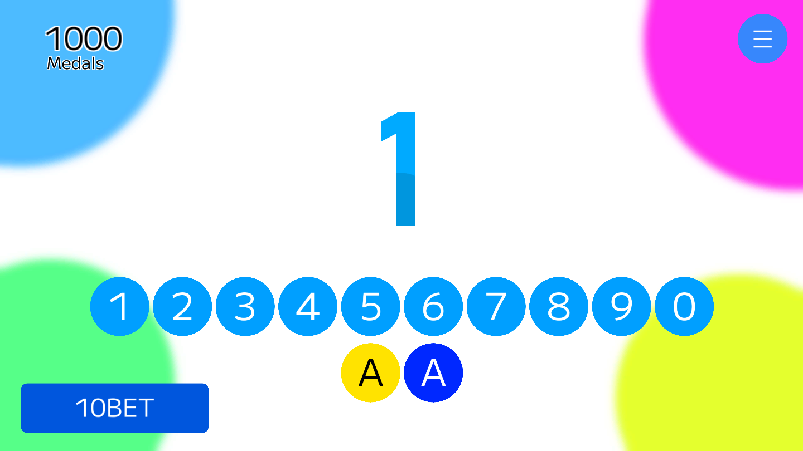
シンプルながら爆発力満点の、CEの原点をお楽しみください！
1.画面の説明

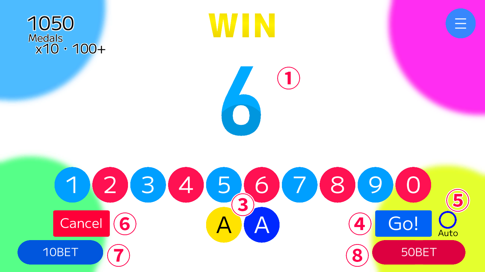
①・・・当選ナンバー
②・・・BET枚数変更ボタン
③・・・BETナンバー選択ボタン
BETナンバー選択後
④・・・抽選スタートボタン
⑤・・・オートモードON/OFFボタン
⑥・・・選択解除ボタン
⑦・・・単一BET数
⑧・・・トータルBET数
2.操作方法
1.ゲームを開いたら、左下の青い四角いボタンでBETを変更する。（最大10000BET）2.0～9、またはAのボタンを押してナンバーをBETする。
3.「Go!」ボタンを押して抽選スタート！
3.配当・図柄紹介
0～9：出現した数字に賭けていれば10倍ゲット★：グリーンチャレンジへ。賭けている場所に関わらず突入する。
A&A：賭けていればスーパーチャレンジへ。青も黄も同じ効果。
4.物理抽選

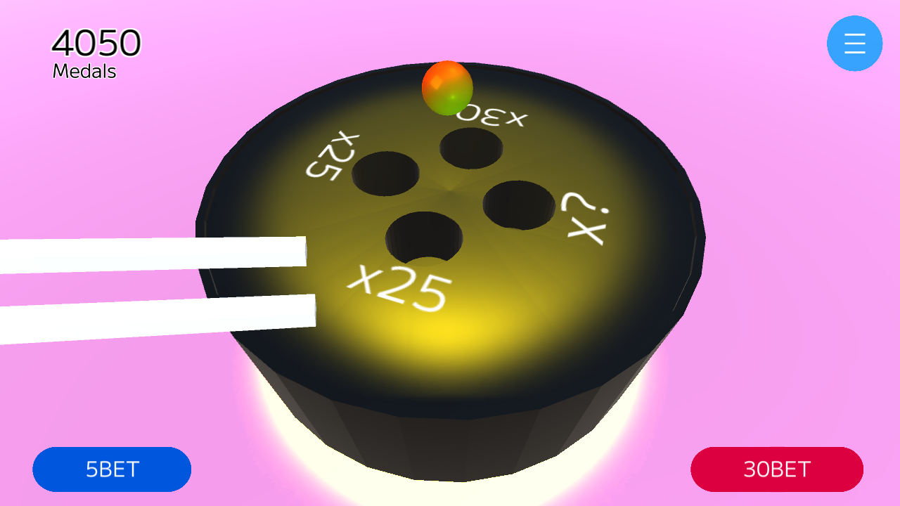
グリーンチャレンジ
★が出現すればグリーンチャレンジへ！クルーン型の物理抽選です。ボールが入ったポケットによって配当が変わります。
×?からは最大40倍も！？
スーパーチャレンジ
Aが出現し、賭けていればスーパーチャレンジへ！グリーンチャレンジと同じ形の抽選機です。※青Aのみ賭けている状態で黄Aが出現しても突入しません。色もあっている必要があります。
ボールが入ったポケットによって配当が変わります。
×?からは最大50倍も！？
Night Crort ｜ナイト クロート
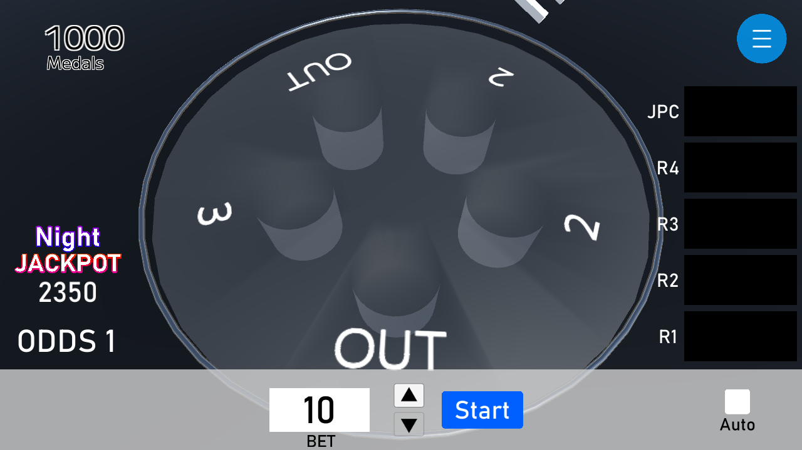
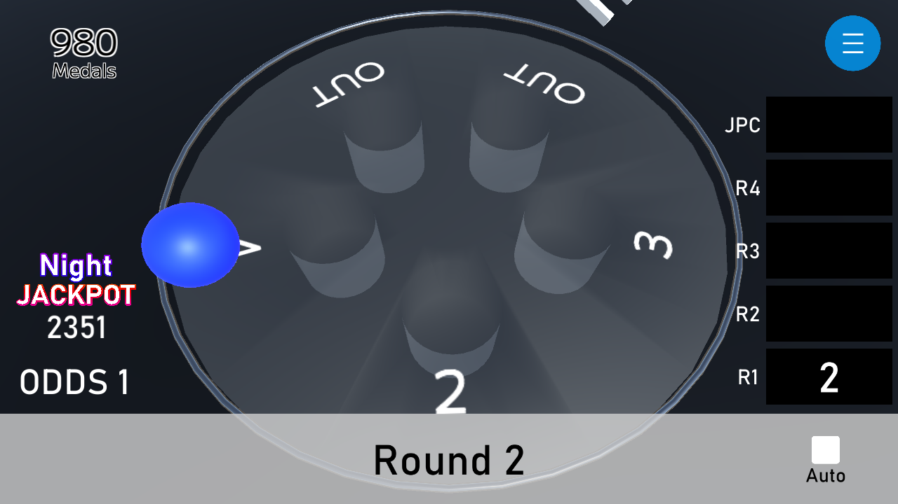
めざせ、NightJP！
1.画面の説明
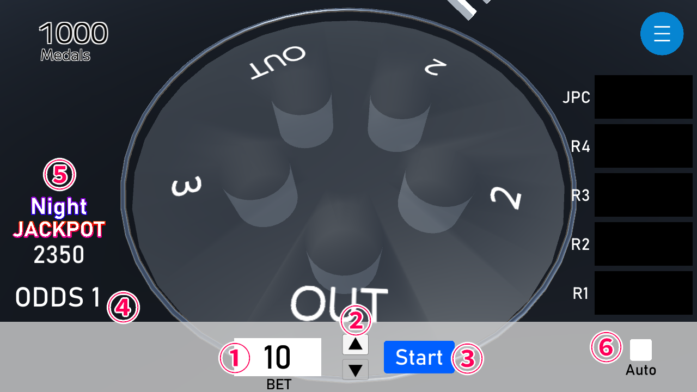
②・・・BET枚数変更ボタン
③・・・抽選スタートボタン
④・・・現在のオッズ
⑤・・・現在のNightJACKPOTの数値（SuperJPC中はSuperNightJPのNightJP配当が表示されます。）
⑥・・・オートモードON/OFFボタン
2.操作方法
1.画面下部のボタンでBETを決めます。「▲」を押すと上げられ、「▼」を押すと下げられます。（最大1000BET）2.「Start」ボタンを押してスタート！
3.あとは見守るだけ。
3.基本ルール
抽選スタート後、JPC以外のOUTと書かれていないポケット（数字だけ）に入ると次のラウンドに進みます。ラウンド4にはJPCポケットがあり、入るとJPCに移行します。 OUTに入るかJPCで配当が決定した場合、それまでの数字を合計して配当計算を行います。（詳しくは3.配当を確認）
4.配当
配当計算は、全4+1ラウンドの数字の合計×ODDSです。ODDSはBETの10分の1です。
つまりR1で2、R2で3、R3で5OUTで1000BETだった場合、この場合は1000枚獲得となります。
（｛2+3+5｝×100）
まあ、まずはやってみてください！
5.ジャックポット・JPC
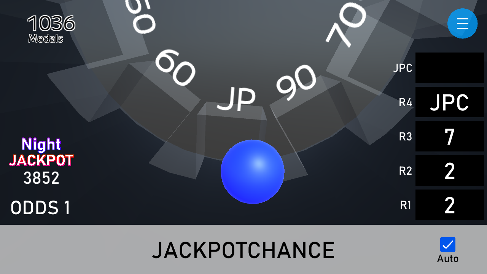
JACKPOTCHANCE
ラウンド4でJPCポケットに入ると突入。確率10分の1を当てれば見事JP獲得です！NightJP
通常のJPCで「JP」ポケットに入るとNightJP獲得です！ゲームスタートする度に、BETの100分の1の数字分上昇します。
JPの値は全プレイヤー共通です。
初期値は800で、カンストは9999です。
（ちなみに、NightJPの単位は「枚」ではなく「倍」です。最終的な配当に加算されます。）
Super JACKPOTCHANCE

SuperJPCは通常のJPCより配当がスーパー!になってもう一度抽選されます！
ここでもJPを獲得すると、「SuperNightJP」をゲットしちゃいます！
目指せNight&SuperNightダブルJP！
SuperNightJP
SuperJPCで「JP」ポケットに入るとSuperNightJP獲得です！SuperNightJPは、NightJPとSuper配当を足したもので、
Super配当はゲームスタートするたびにBETの500分の1の数字分上昇します。
Super配当の初期値は1200、カンストは19999で、全プレイヤー共通です。
つまり、SuperNightJPの最大値は 9999 + 19999 なので、なんとODDSの29998倍となります!!
SuperNightJPのNightJP配当は、SuperJPC突入前のNightJPの値で、SuperNightJPを獲得した場合はSuper配当のみがリセットされます。
また通常ゲームからの配当は通常のJPCで獲得しているため、SuperJPCでは ODDS × SuperJPC の配当を獲得できます。
Tunety Wave ｜チューンティ ウェーブ
確変目指してスロットブンブン!!
1.画面の説明
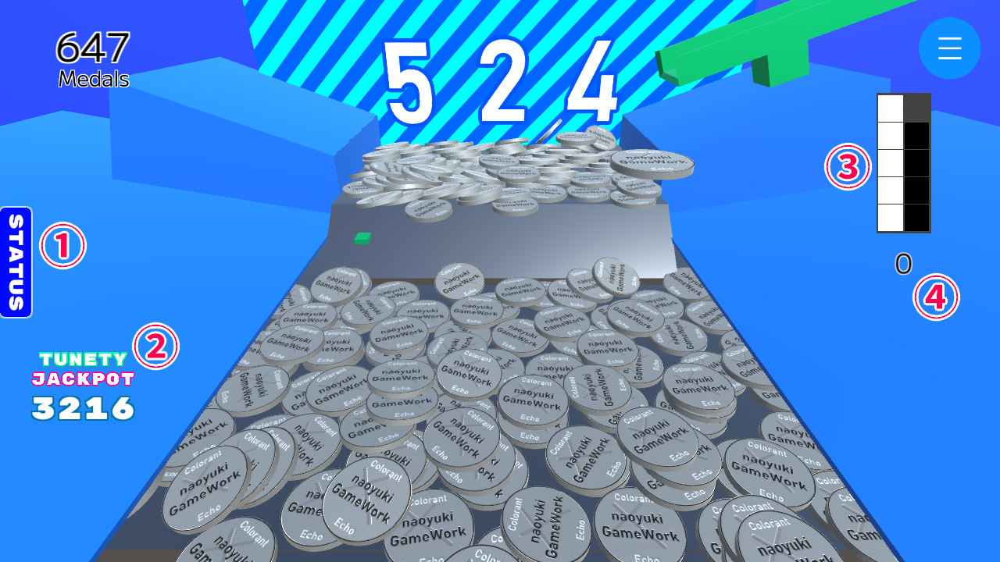
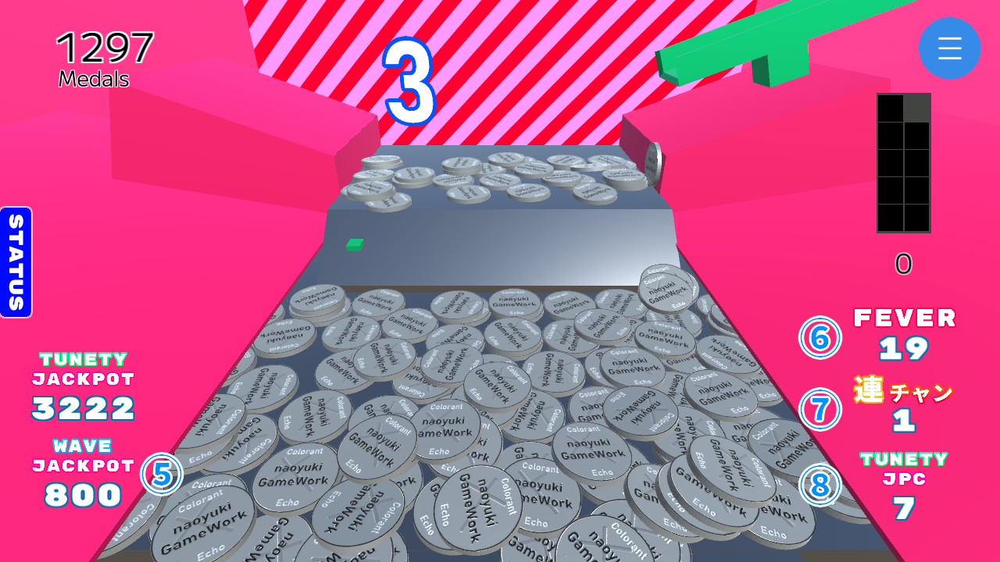
②・・・現在のTunetyJPの枚数
③・・・スロットのストック
④・・・残り払い出し枚数
確変・スペシャル確変時
⑤・・・現在のWaveJPの枚数
⑥・・・確変・スペシャル確変の残り回数
⑦・・・スロットの連チャン数
⑧・・・残りTunetyJPCカウント
2.操作方法
1.画面クリックorタップでメダルを投入2.プッシャーについている緑の突起をメダルが通過するとスロットスタート（ストック+1）
3.スロットが揃うまでこれの繰り返し
3.基本ルール
まずはメダルを投入しましょう。メダルを1枚投入するごとにメダル枚数が1枚減っていきます。画面手前にメダルが落ちるとメダル枚数を落ちた分だけゲットできます。（グレーメダルは1枚、ピンクメダルは5枚分です。）
プッシャーについている緑の突起をメダルが通過するとスロットがスタートします。何度も何度も回して、数字を揃えていきましょう。
7以外の数字が当選する確率は150分の1。7が当選する確率は500分の1です。
なんだか果てしない挑戦みたいですが、スロットを根気強く回せば、いつかは確変・スペシャル確変という名の天国に行けるはずです。
確変・スペシャル確変を目指して頑張ろう！
※確変等の説明はこのあと行います。
4.配当・スロット
基本的には数字が揃えばメダル払い出し&確変です。偶数、奇数に関わらず確変に突入します。
「7」が揃うと特別な確変に突入！
スロット当選時の配当
通常時（7以外） 600枚払い出し&確変突入通常時（777） 600枚払い出し&スペシャル確変突入
確変時 600枚払い出し&確変残り回数リセット
スペシャル確変時 300枚払い出し&確変残り回数リセット
5.確変・スペシャル確変
確変
フィーバー中は数字が揃いやすくなり、数字が揃うたびに600枚払い出され、WAVE JPが400上昇します。
また、数字が揃うと残り回転数がリセットします。
70回転の50分の1ループで連チャンを狙ってください！
残り回数がなくなるとフィーバーが終了し、WAVE JPCに移行します。※WAVE JPCについて詳しくは6.ジャックポット・JPCをご確認ください。
スペシャル確変
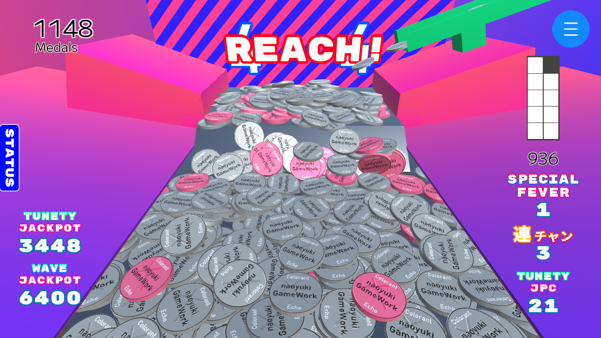
スペシャルフィーバー中は数字がとっても揃いやすくなり、数字が揃うたびに300枚払い出され、WAVE JPが800上昇します。
また、数字が揃うと残り回転数がリセットします。
7回転の3分の1ループで超鬼連チャンを狙ってください!!
残り回数がなくなるとスペシャルフィーバーが終了し、特別なWAVE JPCに移行します。※WAVE JPCについて詳しくは6.ジャックポット・JPCをご確認ください。
6.ジャックポット・JPC
Wave JACKPOTCHANCE
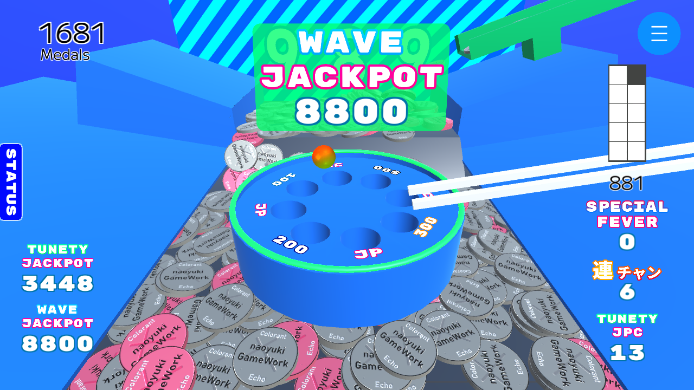
クルーン抽選で8分の1のJPを当てると見事WaveJP獲得です！
また、スペシャル確変終了後のWaveJPCでは、JPの確率がなんと2分の1になります！
WaveJPCの配当は全てダイレクトWINです。
WaveJP
WaveJPの初期値は400で、確変中にスロットが当たるたびに上昇します。確変時は基本スロットが当たるたび400枚上昇します。
スペシャル確変時は800枚上昇します。
ジャックポットはダイレクトに獲得できます！
Tunety JACKPOTCHANCE
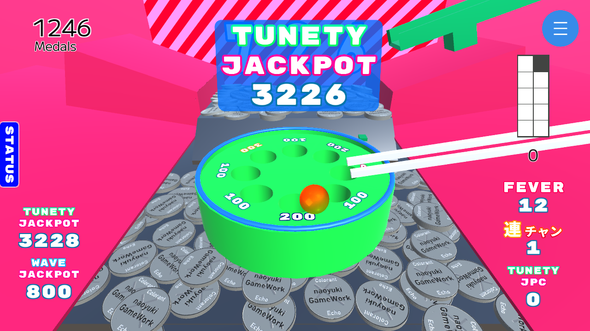
WaveJPCと同じでクルーン抽選です。
初期状態ではJPポケットは1個だけですが、一度外すとそのポケットがJPに変化し、次回のTunetyJPCでのJPの確率がアップします！（ただし一度JPに入るか確変が終了するとポケットがリセットされます。）
見事JPポケットに入ると、TunetyJP獲得です！
また、TunetyJPCの配当は全てダイレクトWINです。
TunetyJP
TunetyJPは全プレイヤー共通のプログレッシブジャックポットです。初期値は3000で、メダルを1枚投入するごとに0.1枚上昇します。カンスト値は99999です。
ジャックポットはダイレクトに獲得できます！
Bright Road ｜ブライト ロード
最上段のJP目指してレッツゴー!!
1.画面の説明
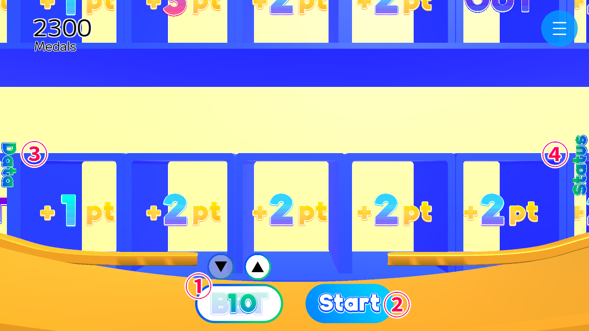
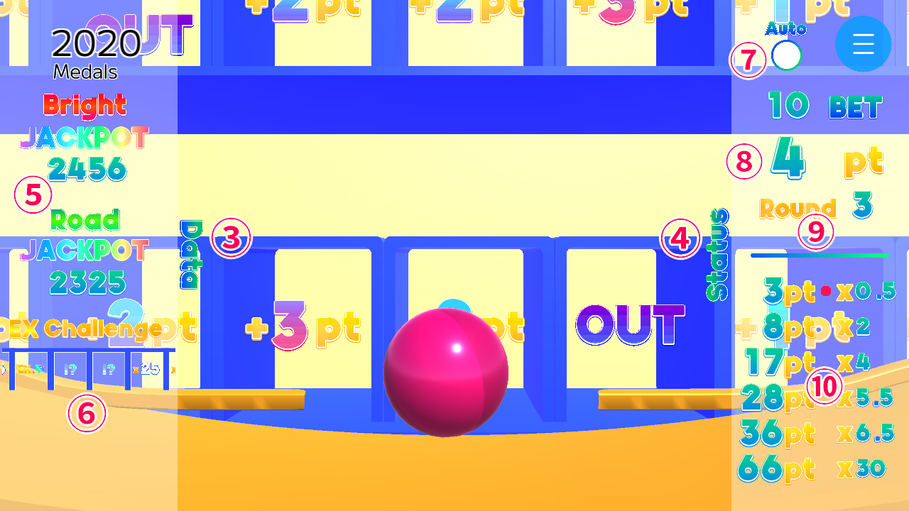
①・・・BET枚数・BET枚数変更ボタン
②・・・抽選スタートボタン
③・・・データパネル表示ボタン
④・・・ステータスパネル表示ボタン
左右パネル表示後
⑤・・・現在の各JPの枚数
⑥・・・現在のEX Challengeの配当
⑦・・・オートモードON/OFFボタン
⑧・・・現在のポイント
⑨・・・現在の抽選タイプ
⑩・・・配当ステータス
2.操作方法
1.BETを変更します。最大500BETまで上げられます。2.「Start」ボタンを押してスタート！
3.あとはボールちゃんがやってくれます。
3.基本ルール
スタートを押すとボールが転がり、ラウンド1から抽選が開始します。「+○pt」と書かれたポケットに入ると1ゲーム中のポイントが数字分プラスされ、次のラウンドに進みます。
途中「OUT」と書かれたポケットに入ると、それまでのポイントと1ゲームごとに変わる配当を計算してメダルを獲得できます。（詳しくは4.配当・ポケットの種類を確認）
また、ポイントポケット以外にも特別なポケットがあります。4.配当・ポケットの種類をご確認ください。
4.配当・ポケットの種類
ポイント配当
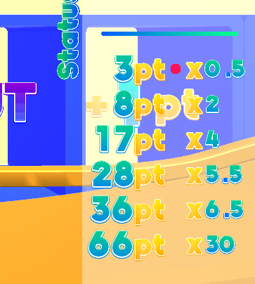
たとえば一番上が 3pt x0.5 となっていた場合、3ポイント以上でBETの0.5倍獲得が確定、ということになります。
さらに抽選を進めると配当が次のステップへ進みます。現在確定している配当には赤い「●」がついています。
全部で6段階あるのでぜひ攻略してみてください。
ポケットの種類
+○pt：現在のゲームのポイントに数字分プラスされます。ポイントは最終的に獲得する配当に影響します。OUT：ゲームが終了し、現在のゲームのポイントと1ゲームごとに変わる配当を計算してメダルを獲得します。
+○pt OUT：数字分ポイントがプラスされると同時に、ゲームが終了します。「+〇pt」と「OUT」をかけた結果になります。
JP：本ゲームのメインJPを獲得できます！JPのタイプを決定するためのルーレットがスタートします。（詳しくは5.ジャックポットの種類を確認）
EX：通常ゲームが終了し、EX Challengeに突入します。（詳しくは6.スペシャル抽選を確認）
Bonus Game：通常ゲームが終了し、Bonus Gameに突入します。（詳しくは6.スぺシャル抽選を確認）
5.ジャックポットの種類
Bright JP
最上段の「JP」ポケットから獲得できる、全プレイヤー共通のプログレッシブJPの1つ。初期値は1000で、10BETするごとに0.1枚上昇します。カンスト値は99999です。
JP枚数はBET枚数によって変化します。
このJPはダブルアップが可能です！（ダブルアップについて詳しくは6.スペシャル抽選を確認）
まれに別ルートから獲得することもあります。
Road JP
BrightJPと同じく、最上段の「JP」ポケットから獲得できる、全プレイヤー共通のプログレッシブJPの1つ。初期値は1500で、10BETするごとに0.1枚上昇します。カンスト値は149999です。
JP枚数はBET枚数によって変化します。
このJPはダブルアップが可能です！（ダブルアップについて詳しくは6.スペシャル抽選を確認）
まれに別ルートから獲得することもあります。
（ちなみに、BrightJPより獲得する確率がほんの少し低いです。）
EX JP
EX Challengeで獲得できるJP。ベース値は3000で、それに抽選で決まった倍率をかけた枚数を獲得できます。
JP枚数はBET枚数によって変化します。
（ちなみに、EXJPの公式の呼び方は「イーエックスJP」です。「エクストラ」ではないのです...）
SPECIAL JP
ゲームで遊んでいると、ほんとにほんと～にたまに獲得できます。枚数はBET×抽選で決定した倍率です。
ぜひゲットしてみてください！
6.スペシャル抽選
ダブルアップ
「いいえ」を押すと1倍で獲得できますが、「はい」を押すとダブルアップに挑戦できます。
ダブルアップは通常ゲームと同じ抽選機で行います。
ポケットは「x2」と「x0」の2種類があり、先に「x2」に5回入ると見事ダブルアップ成功となり、現在のJP枚数の2倍をゲットできます！
ただし、先に「x0」に5回入るとダブルアップ失敗となり、JPはもらえません。
ダブルアップするかどうかの見極めが大事です。
また「x2」と「x0」のステップがどちらも4つになると「x3」ポケットが出現し、JPを3倍で獲得できるチャンスとなります！
ボーナスゲーム
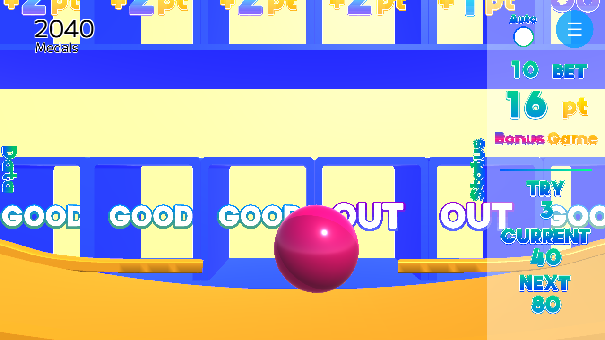
ボーナスゲームは、GOODに入れ続けられれば大量メダルを獲得することができるかもしれない継続ゲームです！
最初は20枚からスタートし、GOODに入れば継続成功です。一度GOODに入ったポケットはOUTポケットに変わります。
継続に成功すればするほど獲得できる枚数も2倍に増えていきます。
ただし一度「OUT」に入ると失敗となりボーナスゲームが終了してしまいます。
そして7回繰り返しすべてのGOODポケットがOUTに変わるとパーフェクトとなり、超大量のメダルをゲットできます!!
また、続くにつれてかけられる倍率も上がり、4トライまでは2倍に増えていきますが、5トライ目は4倍に、6トライ目は8倍に、最後の7トライ目ではなんと20倍に増えちゃいます！
ぜひパーフェクトを目指してみてね♪
EX Challenge
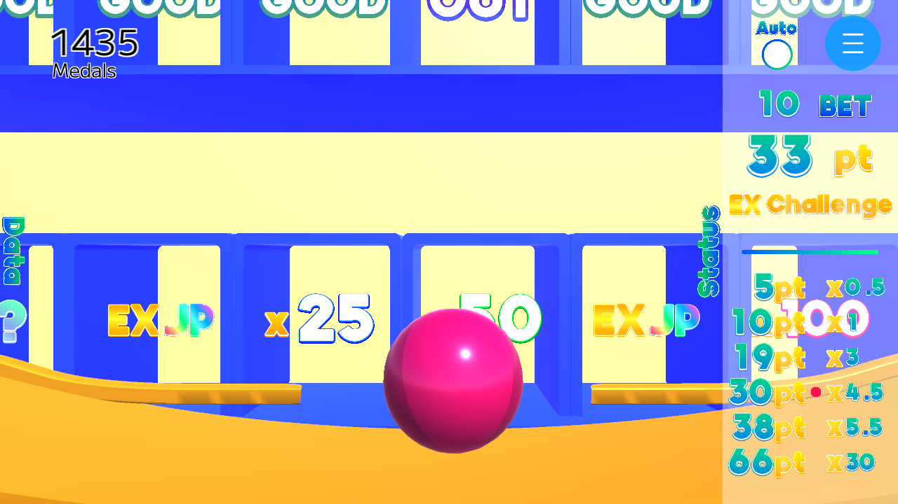
EX Challengeは、主にメダルを倍率で直接ゲットできたり、なんか起きたりする特別抽選です！
EX Challenge（EXC）のポケットの種類
x25、x50、x100：それぞれメダルをBETの25倍、50倍、100倍ゲットできます。！？：何が起きるかわかりません。一説によるとメダルをランダム倍率で獲得できるとか何か特別なものを獲得できるとか...
EX JP：EX JPを獲得できます。（詳しくは5.ジャックポットの種類を確認）
EXCのポケット配当は全プレイヤー共通で、一度ポケットに入るとポケットがパワーアップします。
パワーアップは、x25 -> x50 -> x100 -> ！？ -> EXJP の順に行われます。
EXJPポケットが2つ以上ある場合、EXJPポケットに入るとx25にリセットされます。EXJPポケットは常時1つ以上ありますのでご安心ください。
Warpup Bubble ｜ワープアップ バブル
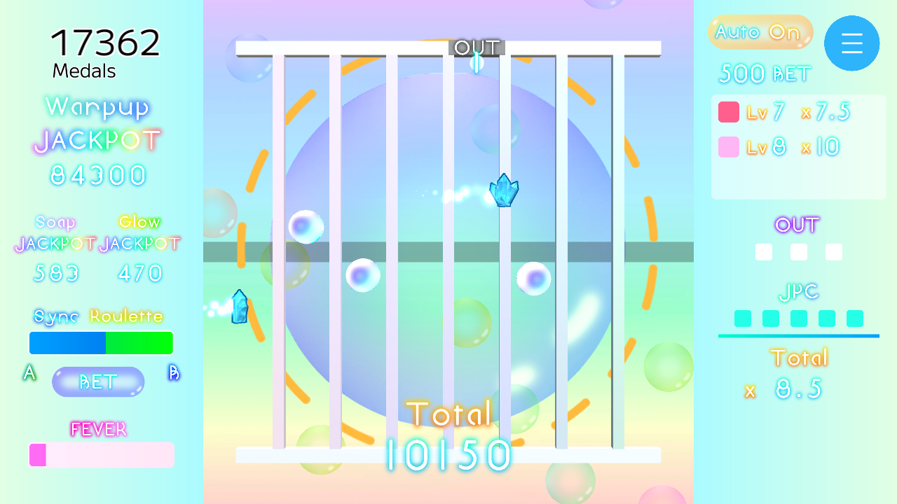
理論上無限に続く抽選、あなたはどこまでいける！？
1.画面の説明
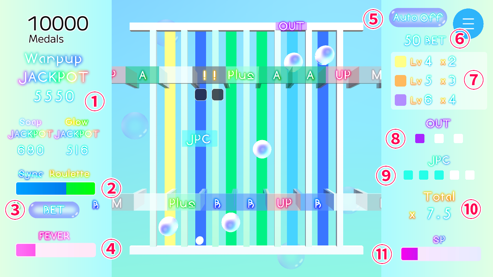
②・・・現在のシンクルーレットメーター（詳しくは 5.シンクルーレット・JP へ）
③・・・シンクルーレットBETボタン
④・・・現在のフィーバーメーター（詳しくは 7.フィーバー へ）
⑤・・・オートモードON/OFFボタン
⑥・・・現在のBET枚数
⑦・・・レベル配当の一覧（詳しくは 3.配当・ポケットの種類 へ）
⑧・・・OUTカウント
⑨・・・WarpupJPCカウント（詳しくは 4.WarpupJPCHANCE・WarpupJP へ）
⑩・・・現在の配当
⑪・・・スペシャルタイムメーター（詳しくは 8.スペシャルタイム・JP へ）
2.基本ルール
まずはBET枚数を決めます。最大500BETまで可能です。スタートを押すとゲームスタート！
最大6個のボールが上がったり下がったりワープしながら、ポケットを通過していきます。
UPポケットでレベルをアップさせたり、Plusポケットでボールを追加させたり！
レーン上部のOUTブロックにボールが当たると、OUTカウント-1。
OUTカウントが0になるとゲーム終了。全ボールのレベル配当を足したメダルをゲットできます。
※OUTカウントはボールの個数によって変化します。
ポケットの種類などは3.配当・ポケットの種類をご確認ください。
3.配当・ポケットの種類
レベル配当
右パネルの上部にあるのはレベル配当の一覧です。レベル1～8にはそれぞれ倍率の配当が紐づいていて、ゲーム終了時の抽選機各レーンの色と対応しているレベルの配当をすべて足したもの×BET枚数を獲得できます。
例えば20BETで、水色のレーンが2つ、緑のレーンが1つ、黄色のレーンが1つだった場合、
(0.5 + 0.5 + 1.5 + 2) x 20BET で、BETの4.5倍の90枚を獲得できます。
新たにボールが追加された場合のボールのレベルは0で、レベル0のボールだけが残った状態で終了すると0Winになってしまいます。いっぱいレベルアップするように祈りましょう！
ポケットの種類
UP：通過したボールのレベルがアップします。Plus：ボールを1個追加します。最大で6つまで追加されます。
! !：チャンスポケット。OUT無効など、様々なことが起こるようです...
A・B：AポケットはSoapJP、BポケットはGlowJPが通過した分アップします。またゲーム終了までに多く通過したほうのルーレットメーターが増えます。
M：メダルポケット。通過するとランダムにメダルを獲得できます。
4.WarpupJPCHANCE・WarpupJP
Warpup JACKPOTCHANCE
JPCカウントが5つのまま一定時間キープするとWarpupJPC確定となり、ゲーム終了後WarpupJPCがスタートします。
WarpupJPCはボールがひたすらワープし続け、ワープした距離が長いほどバブルが成長していきます。
ボールがワープするたびに最終配当にメダルが追加されて、バブルが一定の大きさに達すると見事WarpupJP獲得です！ それ以降は配当に加算される枚数がすべて2倍になります。
ただし、中央を横切る黒いブロック「ブレイクブロック」にボールが当たると壊れてしまいます。すべてのボールが壊れてしまうとJPCが終了し、表示されている枚数を獲得します。
全部のボールが壊れる前にJPを獲得しよう！
また、JPC中にレーンを横切る「クリスタル」にボールが当たると、ワープしなくても最終配当が追加されます。1回当たるだけでめっちゃ追加されるクリスタルもあるらしい...？
WarpupJP
WarpupJPCで獲得できる、全プレイヤー共通のプログレッシブJPです。初期値は1000、最大値は20000で、10BETあたり0.5枚（BETの20分の1）上昇します。
JP枚数はBETに応じて変化します。
5.シンクルーレット・JP
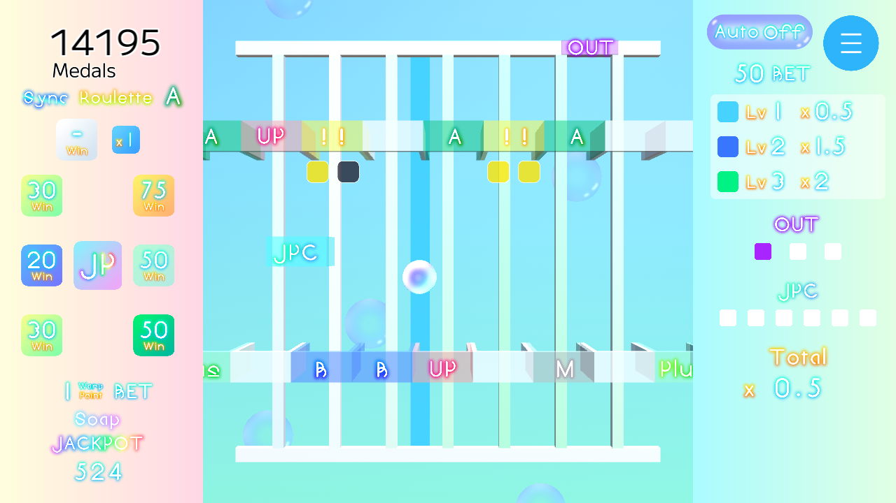
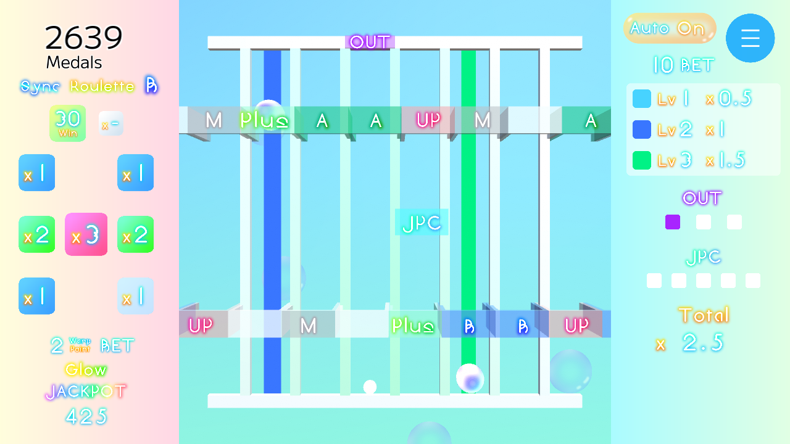
メーターは全プレイヤー共通で、緑または青のメーターがMAXになるとそれぞれ「ルーレットA」または「ルーレットB」が、全プレイヤーで同時に発生します！
ワープポイントでBETして、ここでしか獲得できない7分の1のJPを当てちゃおう！（ワープポイントについては、6.ワープステップ・ワープポイントをご確認ください。）
シンクルーレット発生前ににBETするワープポイントを決めておかないと、ルーレットに参加できませんのでご注意ください。
シンクルーレットA
緑のメーターがMAXになると発生します。配当はルーレットBより高めで、抽選で決定したメダル配当 x 1ワープポイントBETあたり5枚のメダルがもらえます。
つまり、ワープポイント3個をBETしてルーレットAがスタートし、50Winだった場合、50 x 3 x 5 枚。つまり750枚がもらえます。
ルーレットAではSoapJPが当たるチャンス！
シンクルーレットB
青のメーターがMAXになると発生します。配当はルーレットAより低めで基本的なルールはルーレットAと同じですが、
ルーレットBは配当が2倍以上になるチャンスがあります！
ルーレットBではGlowJPが当たるチャンス！（このGlowJPも2倍以上になるかもしれないんす。）
※17時や22時のColorantJPC開催がまもなくの場合に緑・青のメーターがMAXになった場合は、ColorantJPC終了後に発生します。
SoapJP
ルーレットAで獲得できるJPです。初期値は500。最大値は5000で、Aポケットを通過すると上昇します。（通過した回数そのまま上昇するわけではありません。）
ルーレットAまたはBが1回終了するとリセットされます。
SoapJPはワープポイントBET数 x JP枚数をゲットできます。5枚分はかけられません。
GlowJP
ルーレットBで獲得できるJPです。初期値は400。最大値は4000で、Bポケットを通過すると上昇します。（通過した回数そのまま上昇するわけではありません。）
ルーレットAまたはBが1回終了するとリセットされます。
GlowJPはワープポイントBET数 x JP枚数 x 抽選で決定した倍率をゲットできます。5枚分はかけられません。
6.ワープステップ・ワープポイント
ゲームをプレイしていると、ワープした距離に応じてワープステップが進みます。全部で3段階あり、ステップ1やステップ2に到達するとワープポイントをゲットできます。
ワープポイントは、シンクルーレットでBETするために必要です
ワープポイントは最大で20個持てますが、シンクルーレットで使った分減ってしまいます。
貴重なワープポイントをどれだけルーレットに使うかどうかをよく考えるのが大事です！
ちなみに、ゴールのJPというのは...ﾋﾐﾂ
7.フィーバー

左パネルの「FEVER」メーターは全プレイヤー共通で、通常ゲームでワープした距離分加算されます。
メーターがMAXになると、全プレイヤー同時にフィーバーに突入します!!
またフィーバー中は特定のポケットが増えるだけでなく、WarpupJPCですべての配当が2倍となって加算されたりします。
（ここで思うかもしれません。「WJP確定したらどうなるん？」実はWJP確定中にフィーバーだった場合は、配当が2倍の2倍...つまり4倍になって加算されるんです！）
フィーバーはおよそ5分間継続します。
※17時や22時のColorantJPC開催がまもなくの場合にフィーバーが開始した場合は、ColorantJPC終了後も継続されます。
8.スペシャルタイム・JP
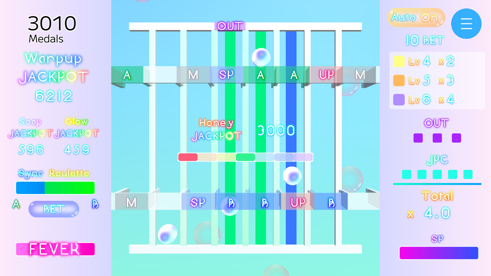
ボールが6個の状態で「Plus」ポケットを一定数通過すると、ゲーム終了後スペシャルタイムが開始します。
スペシャルタイムは、「ボールが4個に固定」「最初の10秒はOUT無効」「ワープステップは通常ゲームから引き継ぎ」などの特徴をもった特別な抽選です
さらに「SP」ポケットが新たに出現し、ここだけのJPもゲットできちゃうチャンスが！
※スペシャルタイム中はフィーバー時のポケット変化はありません。
HoneyJP
スペシャルタイム中に獲得できるJP。「SP」ポケットに入るとランダムにJPステップを獲得でき、7つ集めると見事HoneyJP獲得です！
最低値はBET x 100、ゲットしたJPステップが被るたびにBET x 100枚加算されます。
Colorant JACKPOTCHANCE ｜カラリアント ジャックポットチャンス
最大999,999枚も獲得できるドキドキの2分間をお楽しみください！
1.操作方法
特に特別な操作は必要ありません。眺めるだけです！2.基本ルール・開催時刻
Colorant JPCは、毎日17時と22時にすべてのプレイヤーで同時に開催されます。17時または22時になると自動的に画面が切り替わり、Colorant JPCがスタートします。
スタート後、3つの図柄がランダムに抽選されます。
基本は、図柄の並び方や種類に応じて最終的なメダル配当にプラスされます。（配当について詳しくは3.配当・図柄を確認）
「JP」図柄が出現するとそのリールのJPステップがオンになり、ColorantJP獲得に一歩近づきます！
見事すべてのリールのJPステップをオンにすると、ColorantJP獲得です！
そしてBGMが終わると同時に抽選も終了し、CJPC中にためたトータル枚数を獲得できます。
BGMがなっている間にどれだけデカい配当をゲットできるかがキーですね！
3.配当・図柄
1・2・3・4・5：数字図柄です。同じ数字が左・中・右の3リールに同時に出現するとトータル枚数に+50枚プラスされます。ちなみに、3と4があって、リールが3つあるということは、なんでや！もつくれちゃうというこｔ+15：トータル枚数に+15枚プラスされます。+15が同時に2つ出た場合は+30枚となるわけですね。
JP：この図柄が出たリールのJPステップがオンになります。すべてオンにするとジャックポット獲得です！（詳しくは4.Colorant JPを確認）
また、すでにJPステップがオンになっているリールにJP図柄が出現すると、トータル枚数に+500枚プラスされます。
4.Colorant JP
Colorant JPCですべてのリールのJPステップをオンにすると、見事このColorantJPを獲得です！ColorantJPは全プレイヤー共通のプログレッシブJPです。
ColorantJPの初期値は10,000で、1枚メダルを使うたびに0.01枚上昇します。カンスト値は、驚異の999,999枚です!!
ColorantJPも最終的なトータル枚数にプラスされ、カンストを獲ればトータル100万枚越えも夢じゃありません！
みなさんもColorantJPを獲って、億万長者になっちゃいましょう!!
1.Colorant Stocxについて
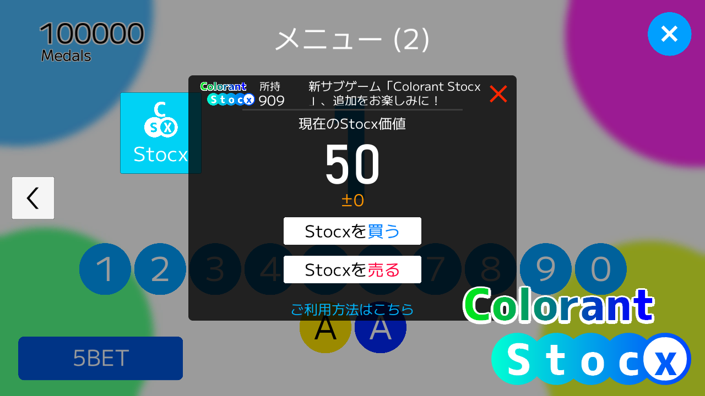
基本的に所持メダルを使ってStocxを買ったり、売ったりすることが重要です。
後述の「現在のStocx価値」は全プレイヤー共通で、5分ごとに±5の範囲で変動します。
2.画面の説明
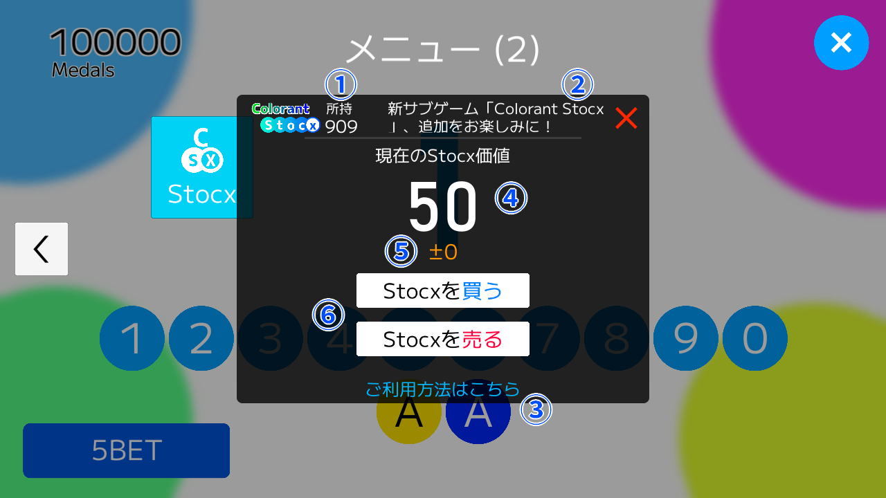

①・・・所持Stocx枚数
②・・・運営からのお知らせ
③・・・利用方法表示ボタン
メイン画面
④・・・現在のStocx価値
⑤・・・前回比
⑥・・・操作開始ボタン
操作画面
⑦・・・必要Stocx枚数入力エリア
⑧・・・確認（検証）ボタン
⑨・・・ステータス表示
⑩・・・操作内容表示
⑪・・・操作完了ボタン
3.実際に操作する
ここではメダルを使って実際にStocxを買ってみます。メニュー（2ページ目）からStocxを開きます。すると大きい数字が出てきます。これは現在のStocxの価値を表し、この値によって買い時か売り時かがわかります。現在は「50」なので、メダル1枚あたりのStocxの価値が50枚ということになります。
今回はStocxを買うので、「Stocxを買う」を押します。
すると画面が切り替わります。上部に入力エリアがありますのでそこに買いたいStocxの枚数分入力します。完了したら右の「OK」を押してください。
すると下に色々な内容が表示されます。内容を確認したら「買う」ボタンを押して操作を完了します。
これでメダルでStocxを買うことができました。